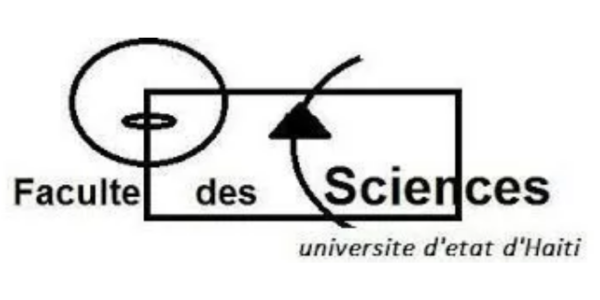
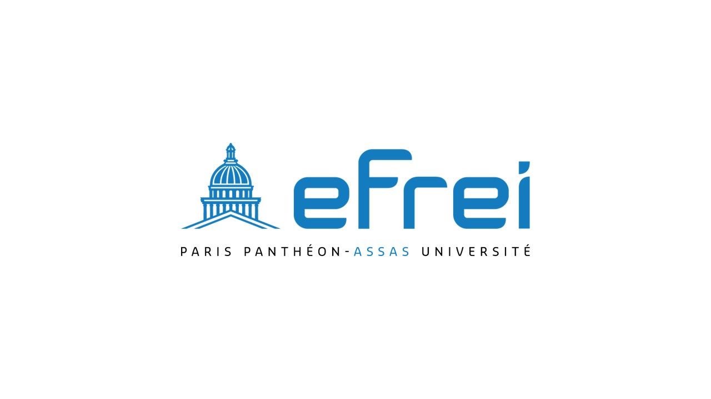
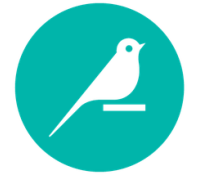
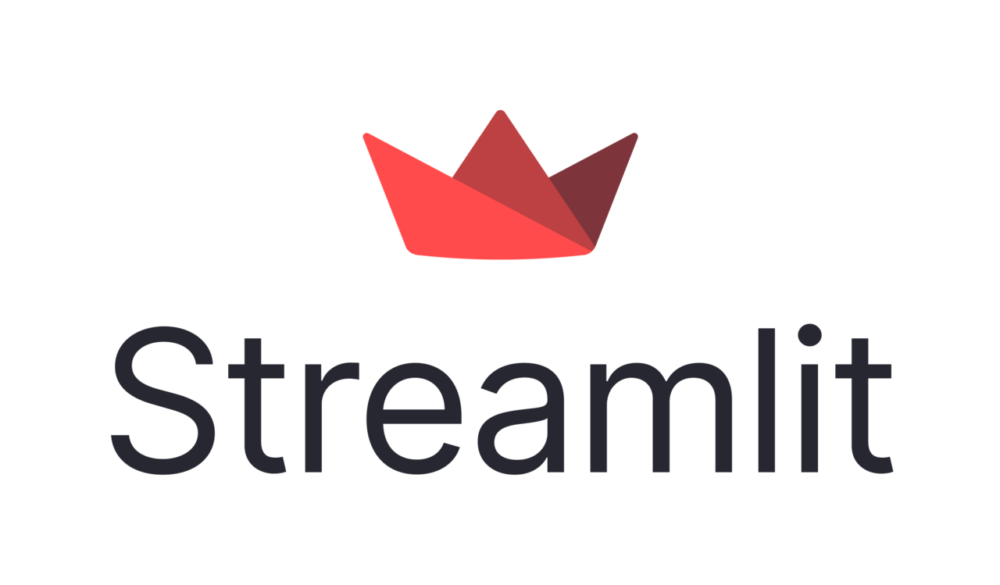

Brainstorm

Discuss
Ideas
Make
Project

Select
Strategy
SEO
Target
Happy
Customers

Data Analyst & Data Scientist Data Analyst & Data Scientist
Diplômé d’un Bac+5 en Data Engineering & IA à l’Efrei, avec deux ans d’expérience en tant que Data Analyst / Développeur BI, je combine expertise en analyse de données, reporting décisionnel et modélisation prédictive. Spécialisé en BI, Data et IA, j’ai conduit des projets allant de l’automatisation de flux de données à la mise en place de modèles de machine learning et systèmes de recommandation. Certifié Power BI (PL-300) et formé au machine learning, je recherche un CDI pour exploiter la data afin d’optimiser la performance business et anticiper les décisions stratégiques. Graduate with a Master’s degree in Data Engineering & AI from Efrei, with two years of experience as a Data Analyst / BI Developer. I combine expertise in data analysis, business reporting, and predictive modeling. Specialized in BI, Data, and AI, I have led projects ranging from data pipeline automation to the development of machine learning models and recommendation systems. Certified in Power BI (PL-300) and trained in machine learning, I am seeking a full-time position to leverage data to optimize business performance and anticipate strategic decisions.
Data Analyst et Data Scientist, j’explore, analyse et modélise les données pour en faire un levier de décision et d’anticipation. J’allie la rigueur de l’analyse (exploration, visualisation, storytelling, KPIs) à la puissance de la science des données (modèles prédictifs, machine learning, automatisation). Je crois que : L’analyse révèle le sens caché des données et éclaire les décisions immédiates. La prédiction donne un temps d’avance, en permettant d’anticiper les tendances et scénarios futurs. L’automatisation crée de la valeur durable, en libérant les équipes des tâches répétitives pour se concentrer sur la stratégie. Mon objectif ? Construire des solutions qui allient compréhension du passé et maîtrise de l’avenir, pour transformer les données en véritable avantage compétitif. As a Data Analyst and Data Scientist, I explore, analyze, and model data to turn it into a lever for decision-making and foresight. I combine the rigor of analysis (exploration, visualization, storytelling, KPIs) with the power of data science (predictive models, machine learning, automation). I believe that: Analysis uncovers the hidden meaning in data and guides immediate decisions. Prediction provides a competitive edge by enabling anticipation of future trends and scenarios. Automation creates lasting value by freeing teams from repetitive tasks so they can focus on strategy. My goal? To build solutions that combine understanding of the past with mastery of the future, transforming data into a true competitive advantage.
 Power BI
Power BI PostgreSQL
PostgreSQL
 Excel
Excel Azure
Azure
Dataiku Python
Python JavaScript
JavaScript
 SQL
SQL HTML
HTML CSS
CSS React
React TypeScript
TypeScript
 DAX
DAX R
R
Streamlit
Application web full-stack pour le monitoring de la supply chain avec tableau de bord interactif, système de notifications automatisé et visualisations KPI temps réel. Full-stack web application for supply chain monitoring with interactive dashboard, automated notification system and real-time KPI visualizations.

Transformation des prévisions internationales et de la disponibilité des stocks avec automatisation complète du reporting supply chain, zéro retraitement manuel. International forecasting and inventory availability transformation with full supply chain reporting automation, zero manual reprocessing.
Automatisation complète de pipelines multi-sources avec traitement OCR et 500+ fichiers automatisés, zéro saisie manuelle de données. Complete automation of multi-source pipelines with OCR processing and 500+ automated files, zero manual data entry.
paragraphe 1
lien projetBrainstorm

Discuss
Ideas
Make
Project

Select
Strategy
SEO
Target
Happy
Customers
Vous avez un projet de données, besoin d'optimiser vos processus ou créer des tableaux de bord ? Je serais ravi d'en discuter avec vous. Do you have a data project, need to optimize your processes or create dashboards? I would be happy to discuss with you.